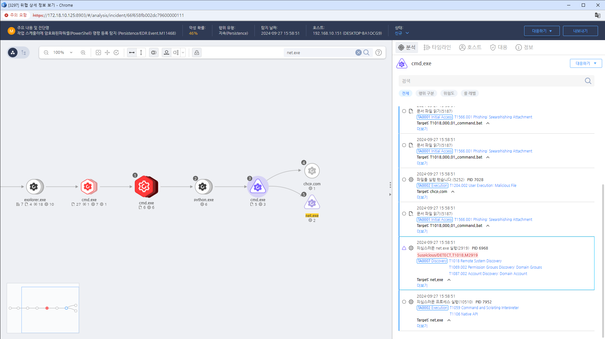

MITRE ATT&CK 액션을 기준으로 대응 방안을 작성
Action = "ProcessCreate" AND TargetProcess = "net.exe" AND Cmdline = "view" AND Cmdline = "/domain"
 https://172.18.10.125:8903/#/analysis/incident/66f658fb002dc79600000111
IDS/IPS를 사용하여 의심스러운 네트워크 스캔을 실시간으로 탐지하고 경고를 설정합니다.
네트워크 장비 및 서버의 로그를 정기적으로 분석하여 비정상적인 접근 시도나 스캔 활동을 식별합니다.
스캔 활동이 감지된 시스템이나 네트워크를 즉시 격리하여 추가 피해를 방지합니다.
의심스러운 활동에 대한 사고 대응 프로세스를 실행하여 상황을 관리합니다.
의심스러운 IP 주소 또는 비정상적인 트래픽 패턴을 차단하여 공격을 방어합니다.
취약점이 발견된 경우 신속하게 보안 패치를 적용하여 시스템을 보호합니다.
공격 세부 사항을 문서화하여 향후 분석 및 대응 개선에 활용합니다.
스캔이 발생한 후 시스템과 네트워크 구성을 재검토하고 필요한 보안 강화를 실시합니다.
불필요한 포트를 차단하고, 특정 IP 주소나 서브넷에 대한 접근을 제한합니다.
네트워크를 여러 구역으로 나누어 공격자가 한 영역에서 다른 영역으로 쉽게 이동할 수 없도록 합니다.
필요한 서비스만 운영하고 불필요한 서비스는 비활성화하여 공격 표면을 줄입니다.
네트워크 및 시스템을 정기적으로 점검하여 취약점을 사전에 식별하고 해결합니다.
네트워크 트래픽을 모니터링하여 비정상적인 스캔 활동을 탐지하고 경고합니다.
네트워크 트래픽을 정기적으로 분석하여 비정상적인 패턴이나 급증하는 요청을 식별합니다.
직원들에게 네트워크 보안 및 서비스 스캐닝에 대한 교육을 실시하여 인식을 높입니다.
명확한 보안 정책을 수립하고 이를 직원들에게 전달하여 모든 사용자가 보안 절차를 준수하도록 합니다.
Action 실행시 함꼐 영향을 받는 다른 Techniqes
| ATT&CK |
|---|
| T1018.000 |
| D3FEND |
|---|
| D3-NTA Network Traffic Analysis |
| D3-NTF Network Traffic Filtering |
| D3-ITF Inbound Traffic Filtering |